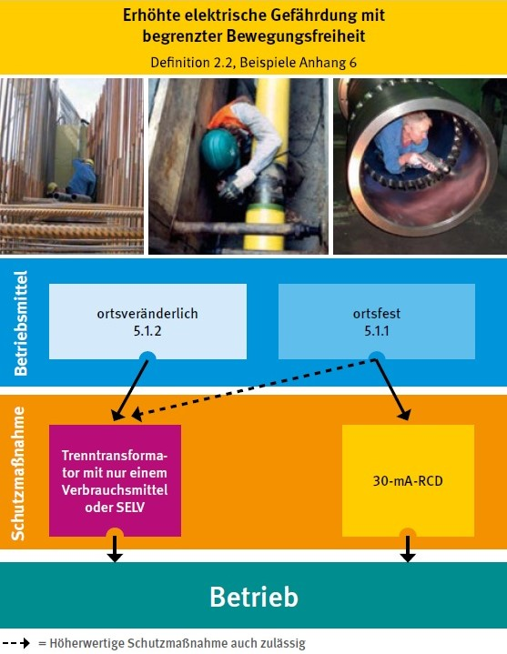
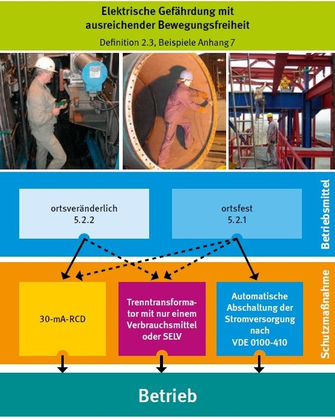

Beim Einsatz von elektrischen Betriebsmitteln ist grundsätzlich von einer elektrischen Gefährdung auszugehen. Das Risiko (Produkt aus Eintrittswahrscheinlichkeit und Verletzungsschwere) steigt mit der Wahrscheinlichkeit einer Beschädigung durch äußere Einwirkungen und mit der Höhe der Körperdurchströmung, begünstigt durch großflächigen Kontakt mit der leitfähigen Umgebung.
Daher sind im Rahmen der Gefährdungsbeurteilung Maßnahmen zum Schutz gegen elektrischen Schlag festzulegen und umzusetzen. Der Stand der Technik, z. B. die Verwendung von Fehlerstrom-Schutzeinrichtungen (RCDs) mit einem Bemessungsdifferenzstrom von nicht größer als 30 mA für Steckdosenstromkreise und fest angeschlossene handgeführte elektrische Betriebsmittel, ist dabei zu berücksichtigen.
Für Arbeitsbereiche, in denen eine erhöhte elektrische Gefährdung vorliegt oder vorliegen kann, sind weitergehende Schutzmaßnahmen erforderlich.
Folgende Arbeitsbereiche können unterschieden werden:
1. Begrenzte Bewegungsfreiheit in leitfähiger Umgebung, z. B.
2. Ausreichende Bewegungsfreiheit in leitfähiger Umgebung, z. B.
Beispielbilder zu einigen der genannten Arbeitsbereiche sind in den Anhängen 6 und 7 dargestellt.

Abb. 1: Übersicht "Elektrische Gefährdung und Schutzmaßnamen beim Einsatz elektrischer Betriebsmittel"
